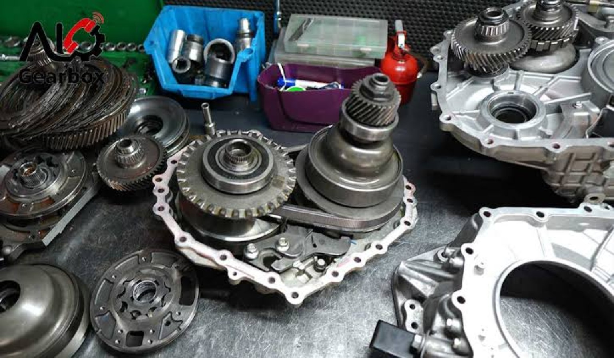

● تعمیر تخصصی گیربکس اتوماتیک
گیربکست رو بسپار به زاگرس
عیبیابی، تعمیر و سرویس گیربکس خودروهای ایرانی و خارجی؛ با تمرکز روی تشخیص دقیق و تعمیر اصولی.

خدمات تخصصی
تعمیر از دلِ گیربکس
تشخیص، تعمیر و سرویس با نگاه فنی
🔍
عیبیابی حرفهای
بررسی علائم و عملکرد گیربکس برای پیدا کردن علت اصلی مشکل.
⚙️
تعمیر گیربکس
تعمیر و بازسازی مجموعه و قطعات گیربکس متناسب با نوع خودرو.
🛠️
سرویس و نگهداری
بررسی روغن و سرویس دورهای برای کمک به عملکرد بهتر گیربکس.
نمونهکارها
گالری تعمیرات زاگرس
چند تصویر از قطعات و مجموعههای گیربکس

زاگرس
قبل از تعمیر، علت را پیدا میکنیم.
هدف ما تعمیر اصولی و جلوگیری از هزینههای اضافی است.
- تخصص در گیربکسهای اتوماتیک
- پذیرش خودروهای ایرانی و خارجی
- عیبیابی قبل از تعویض قطعه
- مشاوره قبل از تعمیر
تماس سریع
مشکل گیربکس داری؟
تقه، لغزش، تأخیر در حرکت، گاز هرز یا چراغ گیربکس؟ برای بررسی تماس بگیر.
📞 تماس با زاگرسارتباط با ما
گیربکس اتوماتیک زاگرس
برای هماهنگی تعمیر و مشاوره تماس بگیرید.
📍 آدرس تعمیرگاهطرشت، خیابان درویشوند ۴۴